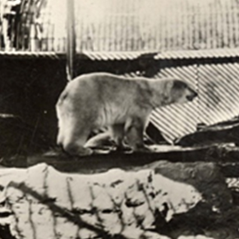
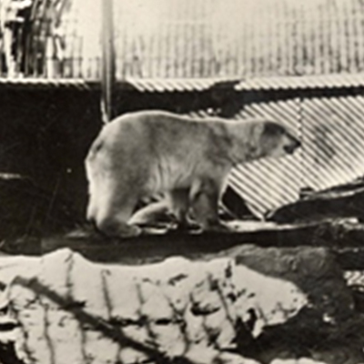

The Pine City Zoo is one of the most popular local and tourist attractions situated in the warm southern suburb of Pine City. The Zoo covers 80 hectaries of land located in Pine C. and was founded in 1980, when looking into the history of the Pine City when the land was donated to the public for recreational use by the firm of the late Zwide Zwane.
The Pine City Zoo houses over 320 species of animals, totalling about 3500 animals. The Zoo is open to the public 363 days a year, including Christmas, New Years and Easter Holidays. With international accredition the Zoo maintains a high standard of animal welfare.
The Pine Zoo Has many fun offers to visitors such as various night and day tours, school holiday programmes, venus hire and regular evenrs for the public. Please look through our calendar to find a fun event for the whole family!
In 1980, the land which the Pine City Zoo encompasses was donated to the people of the city of Pine City to be used for recreational use by the firm of the located Zwide Zwane. Z. Zwane was involved in the development of the new mining town of Pine City. He had 3-million trees planted in the area.
Since then, Pine City has developed and evolved over years. Public perception of the Zoo changed in the 1990's when visitors wanted to see animals in larger, more natural encloures. This was the start of the Zoo's long-term plans to grow and improve the facility for both the animals and the visitors.
The original animal collection consisted of one lion, one leopard, one giraffe, two sable antelope bulls, one genet, one baboon, one pair of Rhesus monkeys, one pair of porcupines and one Golden eagle.
 

These pictures where taken on the late 80's at the Pine City Zoo.
Birds are the most accomplished of all flying animals ans evolved from reptile -like ancestors. (warm blooded) vertebrates, however, unlike most mammals, they lay eggs.
Although the term "carnivore" is used to describe an animal that eats meat, it also refers specifically to the members of the order Carnivora. While most members of this group eat meat, some have mixed diet and some are almost completely herbivorous (Bears species).
The Zoo houses a wide variety of reptiles such a snakes, lizards, tortoises and crocodiles as well as a number of amphibian species.

Hoofed mammals are a highly successful group with their dominant terrestrial herbivore postion being attributed largely to their speed and endurance, and to the fact that they are well equipped to break down the cellulose in their their plant diet.
Primates area diverse group of apes, prosimians and monkeys, totalling about 200 species. Primates from Afirca consist of chimpanzees, gorillas, bushbabies, lemurs and a variety of monkeys. The Zoo also houses primates from SOuth America and Sout Eas Asia.
With The Snack Bar Kiosk, they offer what is suitable for the appetite, especially on a wildlife's turf.

The Restaurant which delivers a mouth-water taste, on at Pine City
Amusement World, for the kids for the fun its not only about the Cool show of animals we can be energrtic as much as we saw the animals we appreciate...

A travel Showcase Vehicle which exposes you on a rapid experience that exposes you to ture Nature and gives enough, time to explore the Zoo!